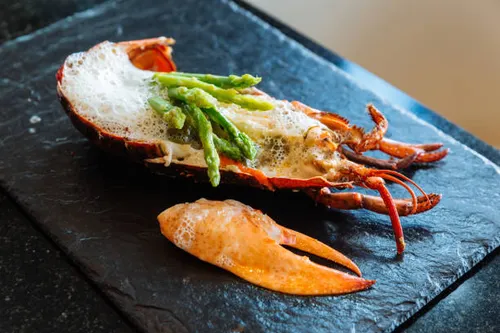

Home
Lobster recipe

Boiled Lobster
Boiling lobster is a straightforward method that results in tender, flavorful meat. To boil
a lobster, bring a large pot of salted water to a rolling boil. Add the live lobster headfirst into the boiling water, ensuring it is fully submerged. Cover the pot and cook the lobster for about 8-12 minutes for a 1-pound lobster, adding an additional 2-3 minutes for each additional pound. The lobster is done when its shell turns bright red and the meat is opaque. Remove the lobster from the pot using tongs and let it cool slightly before cracking open the shell to enjoy the succulent meat inside.
h2>Ingredients
- 1 live lobster (1-2 pounds)
- Salt (about 2 tablespoons per quart of water)
- Butter (optional, for serving)
- Lemon wedges (optional, for serving)
Steps
- Fill a large pot with enough water to fully submerge the lobster. Add salt to the water (about 2 tablespoons per quart) and bring it to a rolling boil.
- Grasp the live lobster firmly and carefully place it headfirst into the boiling water. Be cautious to avoid splashing.
- Cover the pot with a lid and let the lobster cook. For a 1-pound lobster, boil for about 8-12 minutes. For each additional pound, add an extra 2-3 minutes to the cooking time.
- The lobster is done when its shell turns bright red and the meat
is opaque. You can check for doneness by pulling on one of the antennae; if it comes off easily, the lobster is likely cooked through.
- Using tongs, carefully remove the lobster from the boiling water and place it on a plate or cutting board to cool slightly before handling.
- Once the lobster is cool enough to handle, crack open the shell using a lobster cracker or the back of a knife to access the meat. Serve the lobster with melted butter and lemon wedges if desired, and enjoy!